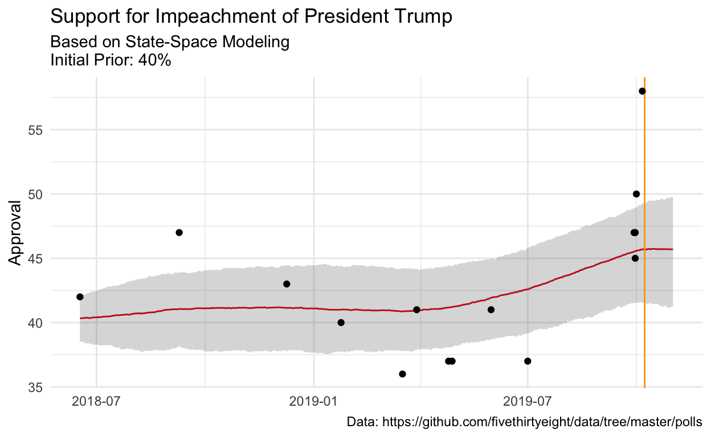

In a previous blog post I looked at approval ratings. Now that impeach is the topic of the day, I think it would be wise to try the same methodology with the public opinion surrounding impeachment. While the data are much more sparse, it will be fun to examine.
So I suppose this is a logical follow-up to the previous post. Now, instead of approval, we can look at impeachment.
Our friends at fivethirtyeight have not publically shared the polls that they have aggregated, so I will use my own aggregations.
suppressPackageStartupMessages(library(tidyverse))
theme_set(theme_minimal())
dat <- read_csv("https://gist.githubusercontent.com/medewitt/74ad210ea8cd3e5870e44a8b3b2e7d64/raw/116273bc73830331bd6b8c1fdd9e48d5ccb8cc8d/impeachment.csv") %>%
select(-X6)In order to build the data for Stan, it is necessary to make some wide data frame. Additionally, I need to calculate some standard errors. Just a reminder for those at home, the standard error for a binomial distribution is:
\[SE = \sqrt\frac{p(1-p)}{n}\]
As I did last time, I’m also going to use some of the new pivot_* functions from {tidyr}. They are great! These tools bring back some of the functionality that was missing when {tidyr} emerged from {reshape2}. It would probably be better to use the MOE as specified by the pollster to get the true design effect, but just to crank this out, I am not going to do that.
library(lubridate)
dat_range <- crossing(seq(min(dat$date),
max(mdy("11/1/2019")),
"1 day") %>%
enframe(name = NULL) %>%
set_names("date_range"), pollster = unique(dat$pollster))
formatted_data <- dat %>%
mutate(my_end = date) %>%
select(my_end, approve, n, pollster) %>%
mutate(polling_var = sqrt(.5 * (1-.5)/n)*100) %>%
right_join(dat_range, by = c("my_end" = "date_range", "pollster"))
formatted_data[is.na(formatted_data)] <- -9
sigma <- formatted_data %>%
select(my_end, pollster, polling_var) %>%
pivot_wider(names_from = pollster,
values_from = polling_var,
values_fn = list(polling_var = max)) %>%
select(-my_end) %>%
as.matrix()
y <- formatted_data %>%
select(my_end, pollster, approve) %>%
pivot_wider(names_from = pollster,
values_from = approve,
values_fn = list(yes = max)) %>%
select(-my_end) %>%
as.matrix()This is the same model from this blog post and this one courtsey of James Savage and Peter Ellis.
// Base Syntax from James Savage at https://github.com/khakieconomics/stanecon_short_course/blob/80263f84ebe95be3247e591515ea1ead84f26e3f/03-fun_time_series_models.Rmd
//and modification inspired by Peter Ellis at https://github.com/ellisp/ozfedelect/blob/master/model-2pp/model-2pp.R
data {
int polls; // number of polls
int T; // number of days
matrix[T, polls] Y; // polls
matrix[T, polls] sigma; // polls standard deviations
real inflator; // amount by which to multiply the standard error of polls
real initial_prior;
real random_walk_sd;
real mu_sigma;
}
parameters {
vector[T] mu; // the mean of the polls
real<lower = 0> tau; // the standard deviation of the random effects
matrix[T, polls] shrunken_polls;
}
model {
// prior on initial difference
mu[1] ~ normal(initial_prior, mu_sigma);
tau ~ student_t(4, 0, 5);
// state model
for(t in 2:T) {
mu[t] ~ normal(mu[t-1], random_walk_sd);
}
// measurement model
for(t in 1:T) {
for(p in 1:polls) {
if(Y[t, p] != -9) {
Y[t,p]~ normal(shrunken_polls[t, p], sigma[t,p] * inflator);
shrunken_polls[t, p] ~ normal(mu[t], tau);
} else {
shrunken_polls[t, p] ~ normal(0, 1);
}
}
}
}
Now we can put the data in the proper format for Stan. I’m also going to supply the 2016 voteshare as the initial prior. This is probably a favourable place to start.
library(rstan)
rstan_options(auto_write = TRUE)
options(mc.cores = parallel::detectCores())
approval_data <- list(
T = nrow(y),
polls = ncol(sigma),
Y = y,
sigma = sigma,
initial_prior = 40, # Rough dissapproval ratings
random_walk_sd = 0.2,
mu_sigma = 1,
inflator =sqrt(2)
)Now we can run the model. This might take a little while, but we have relatively sparse data and few instances per pollster, so it is what it is.
trump_model <- sampling(sstrump,
data = approval_data,
iter = 2000,
refresh = 0,
chains = 2,
control = list(adapt_delta = .99,
max_treedepth = 15))I’m just going to look quickly at some of the Rhat values. I see that some of my ESS are a little lower than I would like. This isn’t completely surprising given the sparsity of data (57 different polls).
summary(trump_model, pars = "mu")$summary[1:15,]
mean se_mean sd 2.5% 25% 50%
mu[1] 40.30741 0.06190138 0.9059502 38.49922 39.68681 40.31706
mu[2] 40.31716 0.06553894 0.9193055 38.53630 39.68505 40.33756
mu[3] 40.32666 0.06561496 0.9350906 38.52746 39.70161 40.34670
mu[4] 40.33204 0.06898497 0.9516362 38.45449 39.65974 40.33658
mu[5] 40.33988 0.07243773 0.9712154 38.42385 39.66869 40.36631
mu[6] 40.35036 0.07653768 0.9949816 38.38083 39.66995 40.37707
mu[7] 40.35554 0.07926889 1.0086502 38.37328 39.67232 40.37584
mu[8] 40.36204 0.07867065 1.0226264 38.38507 39.67749 40.36624
mu[9] 40.36323 0.08163212 1.0375308 38.37906 39.65999 40.34635
mu[10] 40.36653 0.08395592 1.0505904 38.35447 39.66349 40.35510
mu[11] 40.38259 0.08831589 1.0602436 38.30129 39.68615 40.38569
mu[12] 40.39177 0.08868490 1.0776734 38.28760 39.66603 40.39733
mu[13] 40.39286 0.09003991 1.0783720 38.28366 39.67266 40.39789
mu[14] 40.40016 0.09360798 1.0835296 38.28163 39.66789 40.41005
mu[15] 40.40836 0.09436720 1.0904263 38.30821 39.63416 40.40694
75% 97.5% n_eff Rhat
mu[1] 40.91725 42.01915 214.1944 1.014892
mu[2] 40.93441 42.10737 196.7528 1.016927
mu[3] 40.97634 42.07643 203.0962 1.017022
mu[4] 40.99271 42.15079 190.2974 1.019069
mu[5] 41.03972 42.19671 179.7635 1.019980
mu[6] 41.05915 42.19824 168.9972 1.021089
mu[7] 41.05423 42.28022 161.9107 1.021116
mu[8] 41.07248 42.30456 168.9696 1.021172
mu[9] 41.08440 42.30490 161.5399 1.022249
mu[10] 41.08037 42.36284 156.5900 1.024181
mu[11] 41.09472 42.44449 144.1231 1.026367
mu[12] 41.11738 42.39893 147.6641 1.025821
mu[13] 41.12855 42.45984 143.4390 1.025320
mu[14] 41.13660 42.43299 133.9849 1.028029
mu[15] 41.13681 42.47503 133.5213 1.028242Now we can extract the model fit and see how it looks!
mu_trump <- extract(trump_model, pars = "mu", permuted = T)[[1]] %>%
as.data.frame
names(mu_trump) <- unique(dat_range$date_range)
mu_ts_trump <- mu_trump %>% reshape2::melt() %>%
mutate(date = as.Date(variable)) %>%
group_by(date) %>%
summarise(median = median(value),
lower = quantile(value, 0.025),
upper = quantile(value, 0.975),
candidate = "Trump")Our model has fairly wide credible intervals, which is to be expected, but the last few point estimates are clear…something is happening. And it looks like something that happened about a week or two has started to move the trend….
mu_ts_trump %>%
ggplot(aes(date, median))+
geom_line(color = "#E91D0E")+
geom_ribbon(aes(ymin = lower, ymax = upper), alpha = .2)+
labs(
title = "Support for Impeachment of President Trump",
subtitle = "Based on State-Space Modeling\nInitial Prior: 40%",
caption = "Data: https://github.com/fivethirtyeight/data/tree/master/polls",
y = "Approval",
x = NULL
)+
geom_vline(xintercept = as.Date(Sys.Date()), color = "orange")+
geom_point(data = dat, (aes(date, approve)))
Text and figures are licensed under Creative Commons Attribution CC BY 4.0. The figures that have been reused from other sources don't fall under this license and can be recognized by a note in their caption: "Figure from ...".
For attribution, please cite this work as
DeWitt (2019, Oct. 8). Michael DeWitt: How About Impeachment?. Retrieved from https://michaeldewittjr.com/dewitt_blog/posts/2019-10-08-how-about-impeachment/
BibTeX citation
@misc{dewitt2019how,
author = {DeWitt, Michael},
title = {Michael DeWitt: How About Impeachment?},
url = {https://michaeldewittjr.com/dewitt_blog/posts/2019-10-08-how-about-impeachment/},
year = {2019}
}